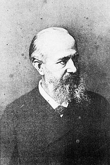
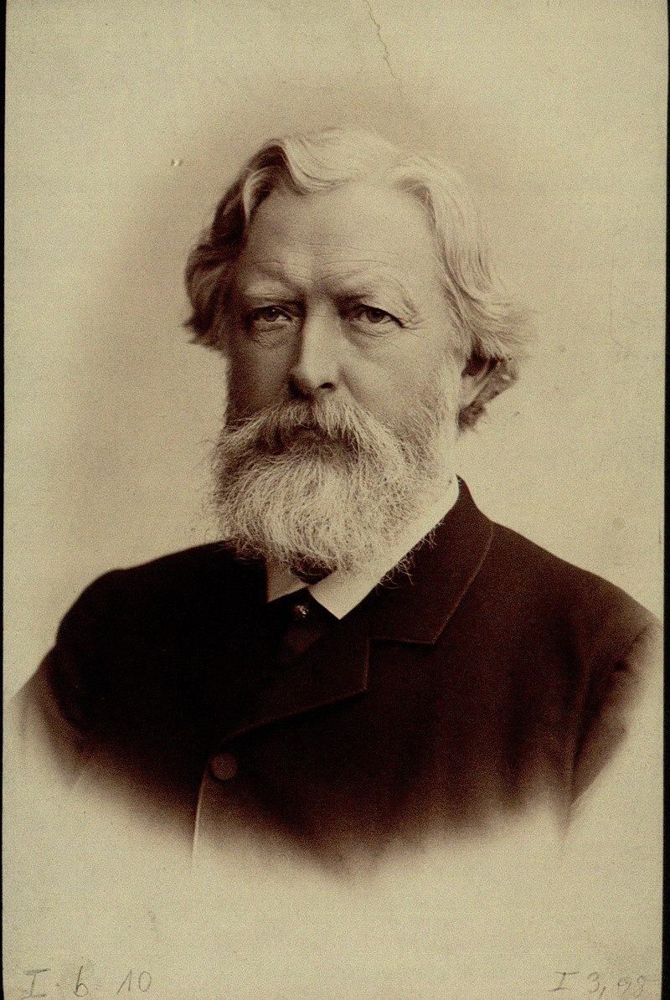

AT ATENEO DE MANILA
Rizal took his first admission examination at the Colegio de San Juan de Letran on June 10, 1872. His brother, Paciano, joined him when he took the exam.
The tests for entering freshmen in the several colleges for males were given or held at the Colegio de San Juan de Letran since the Dominicans exercised inspection and regulation over Ateneo at the time. After clearing the exam, Rizal got accepted to Ateneo Municipal. Although Rizal passed the entrance exam, Father Magin Ferrand, the College Registrar at the time, refused to admit him for two reasons: first, he was a late registrant, and second, he was very pale, thin, and undersized for an 11-year-old. But, with the assistance of Manuel Burgos got admitted into the institution. Jose was not permitted to use Mercado as his surname when he enrolled at Ateneo.
Rizal successfully passed his oral examination on March 14, 1877. He earned the best academic accolades for his Bachiller en Artes degree. Looking at Rizal's academic records, it is clear that he excelled in his academics during his stay at Ateneo. Racial pride, monastic discipline, and the solitude of boarding school life inspired Rizal to outperform his contemporaries.
AT UNIVERSITY OF SANTO TOMAS
Rizal was accepted to the University of Santo Tomas after completing his Bachiller en Artes degree at Ateneo.
Doña Teodora opposed Rizal's intention to seek further education, fearing for her son's safety following the martyrdom of Gomburza. However, Don Francisco sent Rizal to UST, or the Dominican University of the Philippines.
Rizal's results at UST fell short of his achievements at Ateneo, where he excelled in all courses. On the contrary, some of Rizal's grades at UST remained good, although he received lesser ratings in other disciplines.
This might have been because Rizal was not pleased while at UST. Three contributing aspects explain this: Dominican instructors' attitudes toward Rizal, racial prejudice against Filipino students, and his unhappiness with the crude approach utilized at UST.
Rizal life’s Abroad
May 5, 1882 he go to Europe with a named of Jose Mercado he was only 21 years old when he go to Europe
He pursued his education in Unibersidad Central de Madrid he continued to study Philosophy and letters and also Medicine.
In Year 1884 June 21 he received his licenced in Medicine and the year 1885 of June 19 he received his licenced in Philosophy and Letters. During his leisure time he watches stage plays and lectures.
After he got his licence he went to Paris to study advanced in Ophthalmology, he worked as an assistant of Dr. Louis de Wrecker (Leading French Ophthalmologist)

After his advanced study in Paris he went to Germany to practise eye ailments with Dr. Otto Becker at Heidelberg, Germany
Rizal first trip Abroad
May 3, 1882
Rizal Left for the Philippines for the first time to spain
June 16, 1882 - Baselona, spain
He wrote an essay entitled "AMOR PATRIO" (Love of Country). His next article was entitled "LOS VIAJES" (Travels) and followed by "REVISTA DE MADRID" (Review of Madrid) but the latter was returned because the publication was ceased because of lack of funds.
October 3, 1882 - Madrid, spain
He joined the Circulo Hispano Filipino and the Propaganda Movement
September 18, 1883- madrid, spain
In Spain, he wrote Me Piden Versos (They Ask Me for Verses) where he personally recited the poem in the New Year's Eve reception on December 31, 1882.
October 18, 1885 - Paris, france
He worked as a clinic assistant to Dr. Louis de Wecker He helped Juan Luna by posing as a model in several paintings; as an Egyptian in Death of Cleopatra and as Sikatuna in the Blood Compact. He already completed one- fourth of his first novel, Noli Me Tangere.
February 7, 1886 - Heidelberg, Germany
Rizal became a member of Chess Player's Club. He worked at University Eye Hospital under the direction of Dr. Otto Becker. He wrote the poem, To the Flowers of Heidelberg.
June 9, 1886 - Wilhelmsfeld, Germany
He stayed in the house of Rev. Karl Ullmer. He studied the German country life and practiced speaking good German with the Ullmer family. Rizal wrote the last few chapters of Noli Me Tangere
August 15, 1886 - leipzig, Germany
Rizal attended lectures on history and psychology at the University of Leipzig. He became friends with Prof. Ratzel, a famous German historian, and of Dr. Hans Meyer, a anthropologist. German Rizal translated Schiller's William Tell from German to Tagalog. He also translated Hans Christian Andersen.
October 29, 1886 - Dresden, Germany
He visisted Palacio Japonais and many other interesting places. He met Dr. A.B. Meyer, a at Dresden naturalist University.
November 1, 1886 - berlin, Germany
He improved his German spaking. He met Dr. Feodor Jagor, a German scientist, traveler, and author of Travels in the Philippines. Dr. Jagor introduced Rizal to Dr. Virchow, an anthropologist and to Dr. Joest, a geographer. He worked as an assistant in the clinic of Dr. Schweigger. He finished the final manuscript of Noli Me Tangere on February 21, 1887.
May 11, 1887 - Dresden, Germany
Rizal and Viola visited Dr. Adolph Meyer, the Museum of Art.
May 13, 1887 - Litomerice, Germany
He met Blumentritt, an Austrian linguist and the Director of Ateneo de Leitmeritz, Austria.
May 18, 1887 - Prague, Czech republic
Rizal and Viola visited the tomb of Copernicus, the Museum of Natural History, the Bacteriological Laboratories, and the San Juan Nepomuceno.
July 2, 1887 - marseilles, france
July 5, Rizal sailed for Philippines because of the
following:
1. epidemics
2. his father was eprived of his property
3. he wanted to operate on his mother's cataract
4. he received a sad news about his fiancée, Rivera Leonor
August 5, 1887 - Manila, Dagupan, pampanga, bulucan, Philippines & December 1, 1887 - Laguna, Philippines
August 3, arrival of Rizal in Manila, Rizal opened a clinic and gymnasium
The Commission on Censorship investigated the Noli Me Tangere. Noli Me Tangere was heretical, impious and scandalous from the religious perspective and antipatriotic and subversive from the point of view of the Spaniards. Governor General Emilio Terrero provided him with bodyguard in the name of Jose Taviel de Andrade for his security. Rizal left Manila (advised by Gov. Terrero) on February 3, 1888. Before he left, he wrote a poem dedicated to industrious workers of Lipa, Himno al Trabajo (Hymn to Labor).